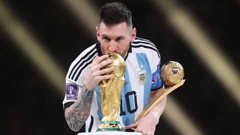

The sport of soccer began in the country of England in the year 1863. There may have been instances of the sport being played before this, but the modern game that many people love had been created 1863. At the time, they used leather balls to play, rather than the high end balls of today. The rules of the game have changed a lot since those days as well, an example being the offside rule. With these changes to rules, improving technology, and many skilled players who helped pioneer the game, we have ended up where we are today.
The sport of soccer is quite different from the popular sport in the Americas, football. There are 11 players on the pitch, 10 are outfield players, and 1 is the goalkeeper. The objective of the game is to score on your opponents and to not get scored on. You are allowed to slide to get the ball, but you have to make contact with the ball, or it's a foul. If you get enough fouls (being two yellow cards or a red card), you get removed from the game and your team must play a player down. So instead of an 11v11, it will turn into an 11v10.
There are many great players in the current game. Some older players are Neymar Jr, Lionel Messi, Christiano Ronaldo, Zlatan Ibrahimovic, Heung-Min Son, Harry Kane, Sadio Mané, Robert Lewandowski, and more. These players have set standards for future players to reach, and there are records that none will ever reach. Some of the current top-class players are Kylian Mbappé, Jude Bellingham, Erling Haaland, Victor Osimhen, Matthijs De Ligt, Gianluigi Donnarumma, and more. These players have potential to become all-time greats, and potentially the greatest of all time. the future is exciting and I can't wait to see it
